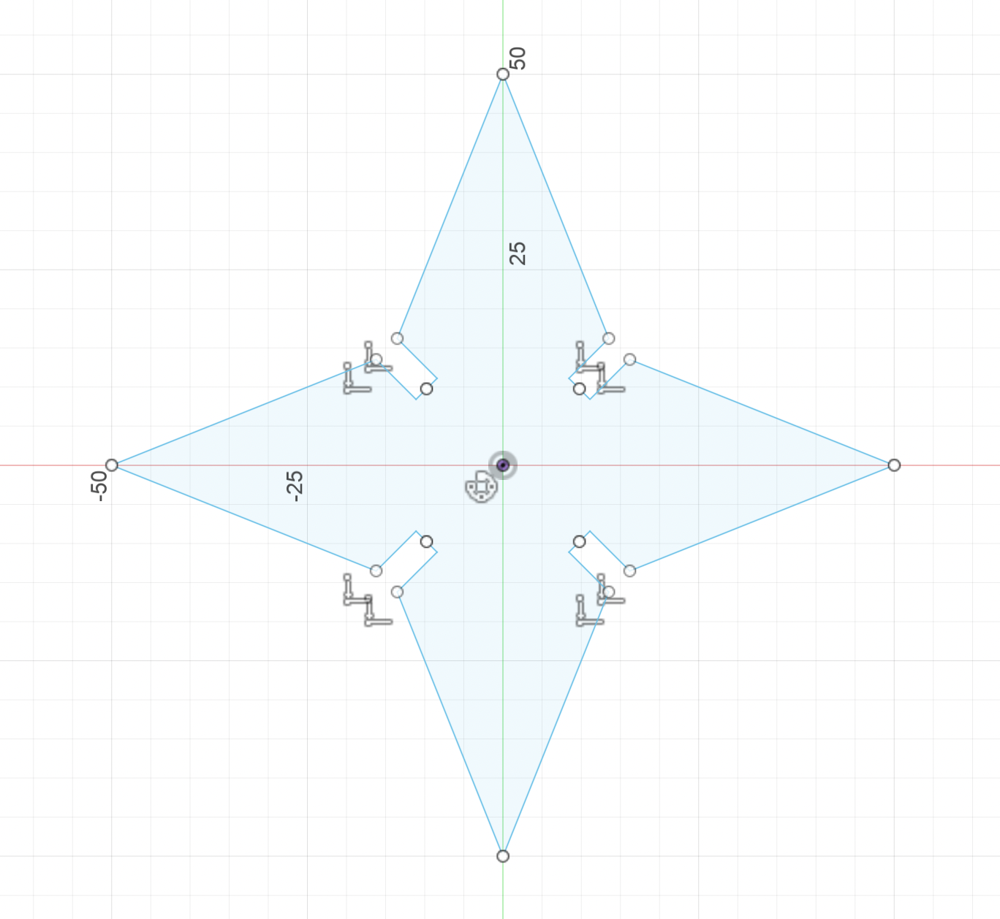
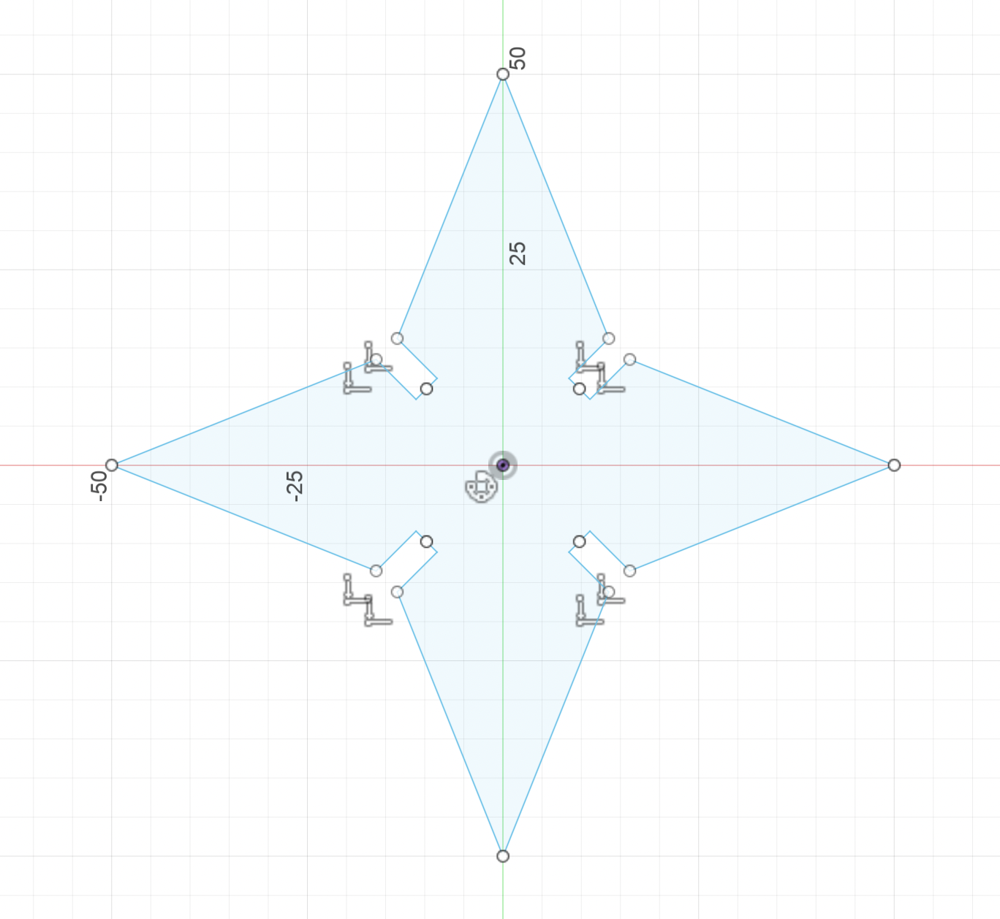
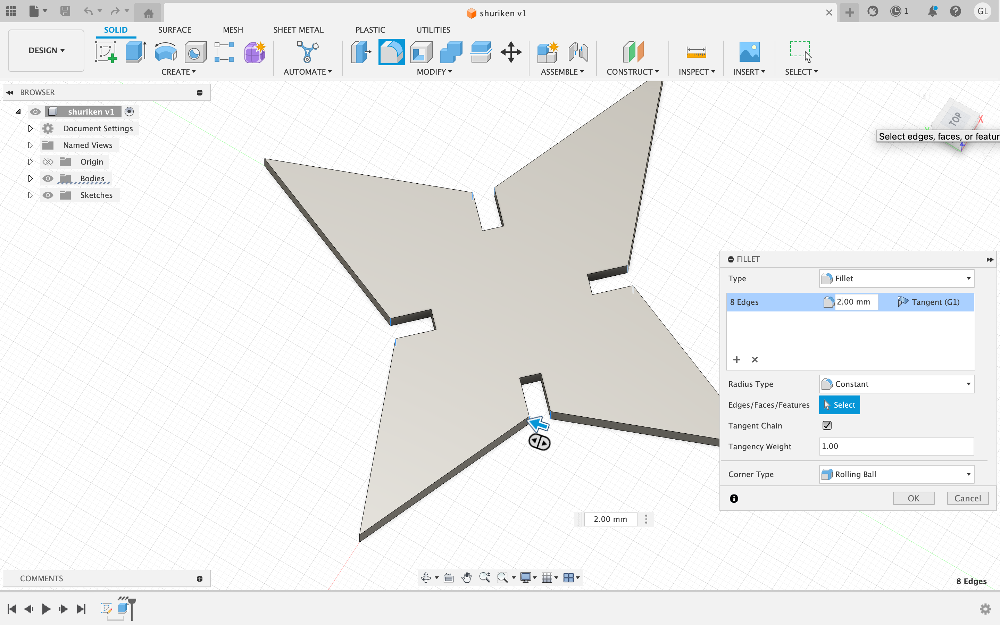
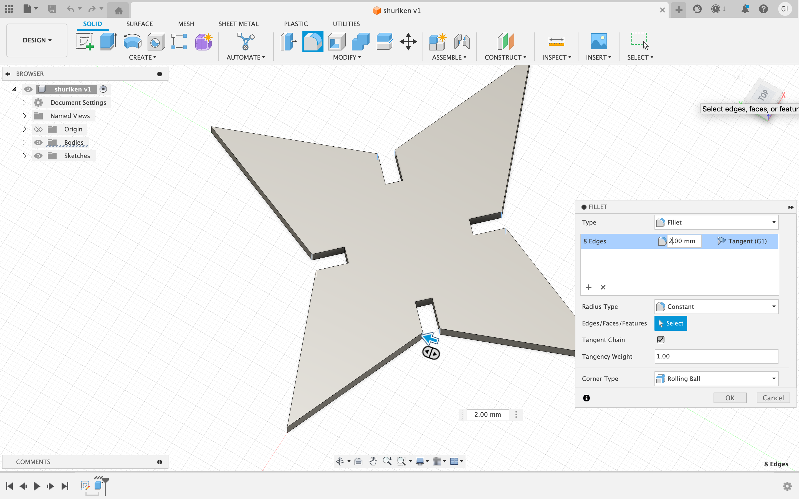

1. Press-Fit Construction Kit
In this class project, our goal was to create a press-fit construction kit. The goal was to design 2D shapes which could be assembled together into more complex 3D structures. Our chosen medium was cardboard, and the tools for the task were Fusion 360, a powerful 3D modeling software, and a laser cutter.
I initially tried to create a 2D-planed design for a shuriken. Here's how I designed it in Fusion 360:
First, I opened up Fusion 360, and crafted out a triangle. I then utilized the mirror and circular pattern tool to create the shape of the shuriken. After that, I crate construction lines in the middle of the shuriken, which would then be used to create the wedges in the shuriken, that would allow each individual shape to connect to one another. These wedges measure precisely 3.8mm in length.
 

 

After completing the design of the shuriken, I utilized the extruding tool to generate the thickness of the 2d object. This thickness (3.8mm) matched the thickness of the medium that we were using in the laser cutter: cardboard.
Final Product:


2. Modeling Household Objects in Fusion 360
Pencil Design
Utilizing the extrude, fillet, and appearance tool, I created a 3d design of a pencil. First, I measured out the dimensions of the pencil using a caliper, and then implemented these sizes onto the Fusion360 application.


Paperclip Design
With the use of the sweep tool and two sketches, I was able to create a replica of a paperclip. First, I created the design of a 2d paperclip using the line and tangent arc tool. After completing the flat design, I created another sketch of that consisted of the circumference of the paperclip (using a different plane to sketch). I then utilized the sweep tool to generate the thickness of the paperclip.